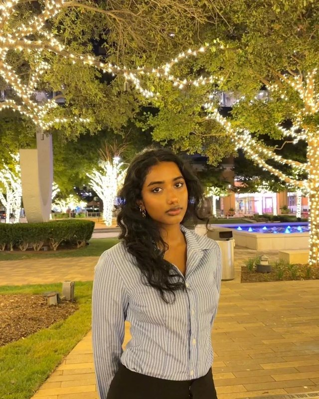
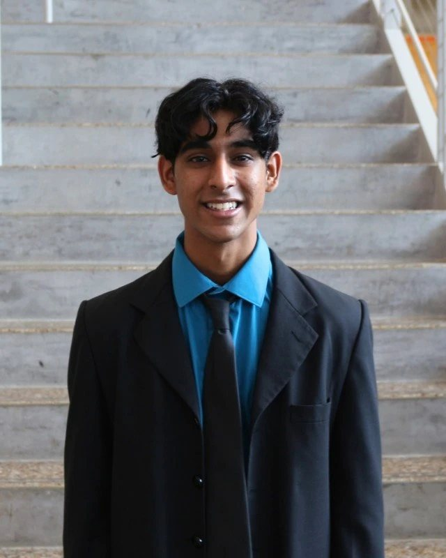

The team
Meet the Officers
The students who plan every workshop, speaker, and social.
Meet the Officers
The student team that plans every workshop, speaker, and social. Reach out to any of us.

Chinmayi MaddaliBusiness Analytics and AI, JuniorPresident- Avi PandyaFinance and CIS Tech, JuniorVice President
 Myiesha PanjwaniFinance, JuniorVP of Operations
Myiesha PanjwaniFinance, JuniorVP of Operations- Aaron SenFinance, JuniorTreasurer

Nirmal ShahComputer Science, JuniorTech Dev Officer- Sanika TripathiData Science, JuniorHead of Marketing